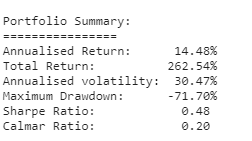
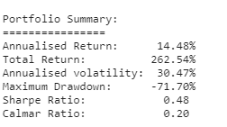

About Josh
I'm a sophomore studying math and computer science at Cornell, and I'm also pursuing a minor in music. You can usually find me rock climbing, playing League, eating unhealthy food, playing percussion, and reading math books. Lately I've also gotten into studying competitive programming.
My academic interests lie in analysis, financial mathematics, and computing theory. I'm still trying to figure out my career interests, but as of now, I'm a consultant for CS 2110, and I work on grading assignments and holding office hours. I also know Python, Java, HTML, CSS, C/C++, and Javascript.
I hope to expand this website with information on my personal projects and maybe turn it into a blog. If you're reading this, you're probably a recruiter or a friend who wants to make fun of my HTML. Either way, please excuse how underdeveloped this site is at the moment :)
To the right are some photos of me, and below you can see info on the latest project I've been working on.
 
